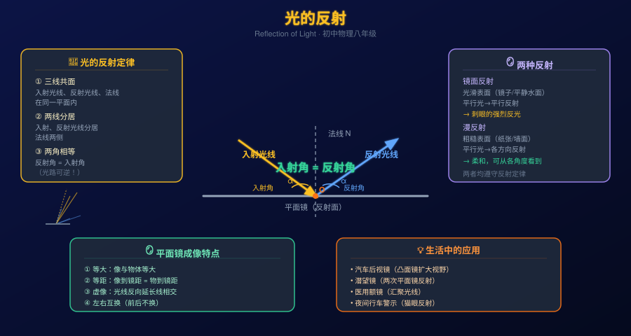

你每天早晨照镜子，看到自己的样子；夜晚开车时对面车灯让你睁不开眼。
但为什么镜中的像和真实的你"左右互换"？为什么磨砂玻璃不刺眼但镜子会？光反射有没有规律可循？
因此要掌握光的反射定律（反射角=入射角、三线共面），理解镜面反射与漫反射的区别，以及平面镜成像的四个特征。
光的反射定律（三句话）
入射光线、反射光线和法线在同一平面内
入射光线和反射光线分居法线两侧
反射角 = 入射角（角度均从法线量起）
补充：光路是可逆的——沿反射光线方向入射，则沿原入射光线方向反射
法线
过入射点垂直于反射面的直线。是测量入射角和反射角的基准。法线不是真实存在的光线，是辅助线。
⚠️ 常见错误：把角度从镜面量起
入射角 vs 反射角
入射角：入射光线与法线的夹角
反射角：反射光线与法线的夹角
若入射角为 30°，则反射角也为 30°
若光线垂直入射（入射角=0°），则垂直反射
光路可逆
反射时光路是可逆的：你能在镜子里看到某人，那人也能在镜子里看到你。这在生活中处处可见，比如后视镜——司机能看到后方车辆，后方司机也能看到前车。
🧮 快速计算
入射角 = 40°，反射角 = ?
点击查看答案
入射光线与镜面夹角 30°，入射角 = ? 反射角 = ?
点击查看答案
光垂直射到镜面（入射角=0°），反射角 = ?
点击查看答案
在下方画布上左右拖动或点击，改变入射光线方向，观察反射光线的变化。验证反射角是否始终等于入射角。
使用真实物理引擎模拟光线反射。选择"反射"模式，调整入射角，观察法线和反射光线的实时变化，验证反射定律。
💡 操作提示：顶部选 「全内反射」标签 → 拖动激光器改变入射角 → 观察反射光线和入射角/反射角标注是否相等
通过调整物体位置，观察平面镜中虚像的变化，验证"等距、等大、左右互换"三大特征。
💡 操作提示：选择「平面镜」模式 → 左右拖动物体 → 观察像的位置和大小变化
两种反射都遵守反射定律，区别在于反射面的粗糙程度：光滑表面→镜面反射，粗糙表面→漫反射。
镜面反射
反射面光滑（镜子、平静水面、抛光金属）
平行入射光 → 平行方向反射
特点：某方向极亮，其他方向看不到
例：强烈阳光照射下湖面刺眼
漫反射
反射面粗糙（白纸、墙壁、衣物、皮肤）
平行入射光 → 各方向均有反射
特点：各方向均能看到，光线柔和
例：教室白墙不刺眼，可从各角度看黑板
⚠️ 重要：两种反射均遵守反射定律
漫反射中每一条反射光线都遵守"反射角=入射角"，只是由于表面凹凸不平，各处法线方向不同，导致不同位置的反射光线方向各异。这不是违背反射定律，而是各处入射角不同的结果。
平面镜成像不是真实光线的汇聚，而是反射光线的反向延长线相交的位置——因此是虚像，无法用光屏接收。
在左半区域自由拖动蜡烛（可上下左右移动），观察虚像位置如何随物体变化，验证"等距、等大"特征。
像与物体的大小相等
（放大率 = 1）
像到镜面的距离
= 物到镜面的距离
不能用光屏接收
反射光线反向延长相交
左右方向对调
（前后不互换）
汽车后视镜
使用凸面镜（弯曲镜面）。凸面镜能扩大视野范围，但成缩小虚像。反射定律同样适用于弯曲镜面的每一小点。
潜望镜
两块平面镜 45° 倾斜放置，光线经两次反射，方向旋转 90°+90°=180°（实现上下方向的视线传递）。潜水艇用于观察海面。
医用额镜
凹面镜将光线汇聚到一个焦点，医生用来照亮耳鼻喉内部。反射式天文望远镜也利用大型凹面镜收集光线。
猫眼与反光条
自行车尾部和交通锥上的逆反射材料，由微小玻璃珠组成，能将光线沿原路反射回去（入射光方向），大大提高夜间能见度。
看见它
我们能看到不发光的物体（书本、桌子、衣服），全靠漫反射——物体将光反射到我们眼睛里。没有反射就看不见任何东西。
拆开它
反射定律 = 能量守恒 + 波的对称性。光是一种波，波在界面的反射规律与力学中弹性碰撞的对称性本质相同——入射角等于反射角是自然界的基本对称律。
联系它
光的反射 → 平面镜/凸镜/凹镜成像 → 相机/望远镜/显微镜。这条逻辑链贯穿了从初中物理到大学光学的整个体系。
迁移它
不只是光：声音、水波也有反射（回声=声音反射）。雷达=无线电波反射。这些都遵守同样的反射规律——波的共同属性。